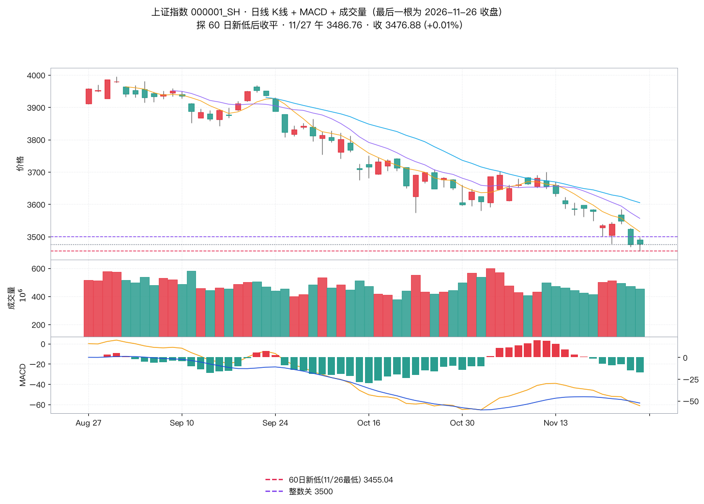
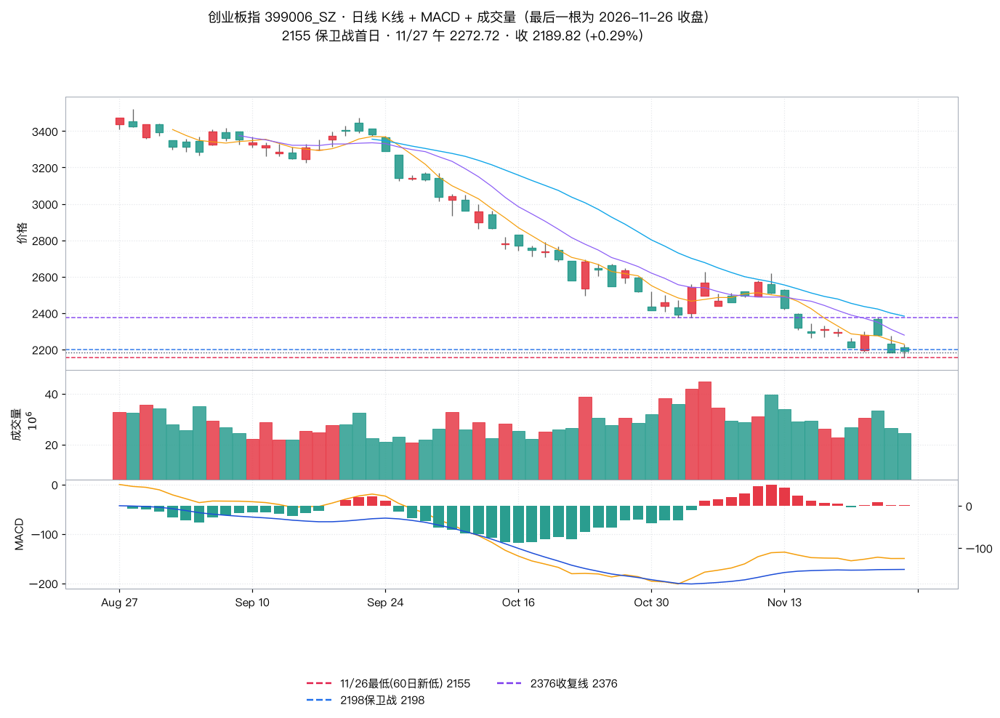
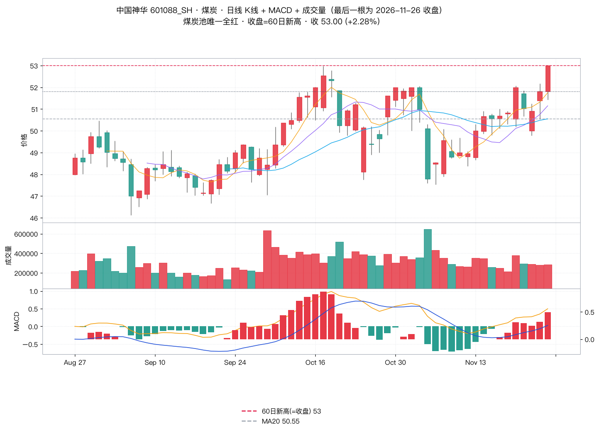
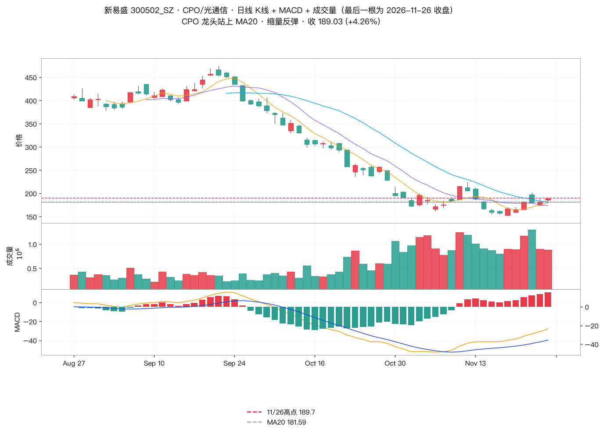
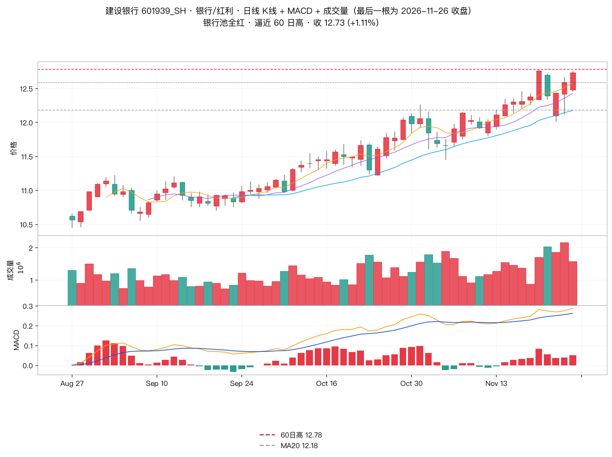

🟢 11:28 三个点位分毫不差：11/26 沪 3455.04／创业板 2155.01／深成 9979.06 全是 60 日新低；12:05「早上收在2272点」＝快照 2272.72，同样分毫不差。🔴 反面：她 10:08 点名的半导体，11/26 实测 −2.02%；09:55「暂时没见量能」与半日 9204 亿（昨日全天 69.8%）不符。打法：不追早盘 +3.79%，等 2376＋放量；煤炭/银行垫底，CPO 只留一份进攻仓。
| 时间 | 信号 | 原文（逐字） | 实测判定 |
|---|---|---|---|
| 11/26 06:12 | 外盘 | 「昨天道指跌曾大跌1105点，收盘反涨164点，收出大长腿」 | ✅ 分毫不差：道指 11/25 低 48913.74＝−1104.96 点、收 50182.95＝+164.25 点；纳指低 22632.40＝−1101 点 |
| 11/26 11:02 | 港股 | 「最疯狂的时候是2980港元，昨日是268.4港元，短短5个月时间跌了90.99%」 | ✅ 算术分毫不差：(268.4−2980)/2980＝−90.99%；11/26 收 293.00、11/27 午 320.00（+9.22%） |
| 11/26 13:15 | 涨停 | 「证通出现拉2连板，旋极出现拉20厘米」 | ✅ 分毫不差：证通电子 002197 在 2 板梯队、旋极信息 300324 创业板首板；当日涨停 65 家、2 板 10 家 |
| 11/26 10:57 | 亚市 | 「香港股市目前上涨468点，日本股市上涨878点，台湾省股市上涨1.71%」 | ⚠️ 盘中口径：恒指 11/26 收 22226.88＝全日 +260.87 点（+1.19%），盘中 +468 尾盘收窄；日经、台股无快照源 |
| 11/27 07:11 | 外盘 | 「昨晚欧洲股市涨2%左右」 | ⚠️ 无法核验：富时100 11/26 收 9284.83＝+0.77%，DAX 无快照源 |
| 11/27 10:08 | 板块 | 「交换机，端侧，算力租赁，CPO，半导体等科技类股目前暂时领先」 | ⚠️ 部分一致：11/26 交换机 +3.00%、CPO +1.98%、算力租赁 +1.57% 领先；半导体设备 −2.02% 反向、端侧无池 |
| 11/27 10:38 | 纪律 | 「一定要分批，不要单独压某一个板块，某一只个股」 | 无方向信号（仓位纪律）：对应下方三只各给一份、单方向不加码 |
| 11/27 10:57 | 量能 | 「市场有一定的反弹力量了，整体看还需要板块效应才能放大成交量」 | ✅ 方向一致：早盘创业板 +3.79%，两市半日 9204 亿＝昨日全天 69.8%，放量已部分兑现 |
| 11/27 11:17 | 点位 | 「属于第一次2198保卫战」 | ✅ 未破：11/27 早盘最低 2199.23＞2198，缓冲仅 1.23 点 |
| 11/27 11:20 | 点位 | 「创业板指数收复2376点的话，第二条腿就够长啦」 | ⏳ 未兑现：早盘收 2272.72，距 2376 还差 4.5% |
| 11/27 11:28 | 点位 | 「昨日大盘的3455点，创业板的2155点，深成指的9979点」 | ✅ 分毫不差：11/26 最低 3455.04／2155.01／9979.06 全是 60 日新低；美股 11/26 休市，正对她说的「缺乏海外市场和国内基本面的共鸣」 |
| 11/27 12:05 | 点位 | 「早上收在2272点」 | ✅ 分毫不差：11/27 早盘创业板收 2272.72 |
11/26 深探新低后收平：沪最低 3455.04（60 日新低）收 3476.88（+0.01%），创业板最低 2155.01（60 日新低）收 2189.82（+0.29%），深成最低 9979.06 收 10084.04（−0.02%）。两市成交 13186 亿，缩量 4.79%；涨 1766／跌 3642 却涨停 65 家（前日 51）、跌停 9 家，连板最高 5 板（克来机电）——指数收平、个股普跌、情绪反而升温。

11/26 开 3490.14／高 3497.81／低 3455.04（＝60 日新低）／收 3476.88；11/27 午 3486.76，3500 整数关未过。

11/26 低 2155.01（＝60 日新低）收 2189.82；11/27 早盘收 2272.72（+3.79%），2155、2198 均未破，2376 未收复。
| 板块 | 11/26 池均值 | 申万交叉验证 | 龙头实测 | 打法 |
|---|---|---|---|---|
| 煤炭 | +2.03%（4涨0跌） | 申万煤炭 +2.40%、37涨0跌，全场唯一均值最高且全红 | 中国神华 53.00＝60 日新高，站上 MA20 50.55 | 底仓：回踩 MA5 51.75 不破可分批，破 MA20 减 |
| 银行/红利 | +0.59%（6涨0跌） | 申万银行 +0.97%、39涨0跌 | 建设银行 12.73，站上 MA20 12.18，距 60 日高 12.78 仅 0.39% | 防御：站上 12.78 才加速，跌破 MA10 12.43 放弃加仓 |
| CPO/光通信 | +1.98%（7涨1跌） | 申万通信 +0.83%（93涨64跌） | 新易盛 189.03，站上 MA20 181.59，成交 163 亿居两市前列 | 进攻：放量破 189.70 才加，缩量不追 |
回避：半导体设备 −2.02%、GPU/国产算力芯片 −2.02%、军工 −1.92%、白酒/食品饮料 −1.08%（0涨8跌）；申万末位美容护理 −1.73%、医药生物 −1.57%、计算机 −1.05%。PCB 池 +2.72% 但申万电子 −0.10%，属池内强势而非行业共振，只做龙头不做板块判断。
| 标的 | 11/26 收盘 | 关键位 | 动作 |
|---|---|---|---|
| 中国神华 601088 | 53.00（+2.28%） | MA20 50.55／MA5 51.75／60 日高 53.00 | 底仓垫：回踩 MA5 不破分批，破 MA20 减 |
| 新易盛 300502 | 189.03（+4.26%） | MA20 181.59／11/26 高 189.70／量比 85.7% | 主线龙头：放量过 189.70 加仓，缩量不追 |
| 建设银行 601939 | 12.73（+1.11%） | MA20 12.18／MA10 12.43／60 日高 12.78 | 防御垫：跌破 12.43 走弱，站上 12.78 加速 |

收 53.00（+2.28%）＝60 日新高（当日最高价），MA20 50.55，量比 93.8%。

收 189.03（+4.26%），收在当日高点附近，站上 MA20 181.59，但量比 85.7% 属缩量反弹。

收 12.73（+1.11%），逼近 60 日高 12.78，站上 MA20 12.18。
| 她的说法 | 实测 | 判定 |
|---|---|---|
| 「暂时没见量能！」（11/27 09:55） | 半日 9204 亿＝11/26 全天 13186 亿的 69.8% | 盘中早段口径，11:30 已不成立 |
| 「交换机…半导体等科技类股领先」（10:08） | 半导体设备 11/26 −2.02%、存储 −1.03% | 方向部分相反，仅 CPO／PCB／交换机成立 |
| 「昨晚欧洲股市涨2%左右」（07:11） | 富时100 11/26 +0.77%，DAX 无快照源 | 无法核验 |
| 「日本股市上涨878点」「台股+1.71%」（11/26 10:57） | 日经 11/26 收 45354.99、11/27 午 −0.90%；台股无源 | 盘中口径，幅度无法核验 |
| 港股智谱「目前上涨15%」（11/26 11:02） | 11/26 收 293.00＝+8.11%，日内高 318.00 | 盘中口径，收盘回落到 +8.11% |
采集：weibo skill 时间线 9 条 + 词表搜索 17 条，跨文件汇总后当日唯一帖 17 条（11/26 四条、11/27 十三条），截稿 2026-11-27 13:05。
行情：Tushare Pro 日线（前复权，基准 11/26 收盘）＋ 新浪／腾讯实时快照（11/27 午间、外盘、港股）；11/27 为午间数据，收盘后再复核。
本页为 11/27 午间盘中版，K 线图最后一根均为 11/26 收盘；11/27 只用午间快照，不含盘中分时结构判断。
免责声明：以上为博主观点的第三方核验记录，不构成投资建议。